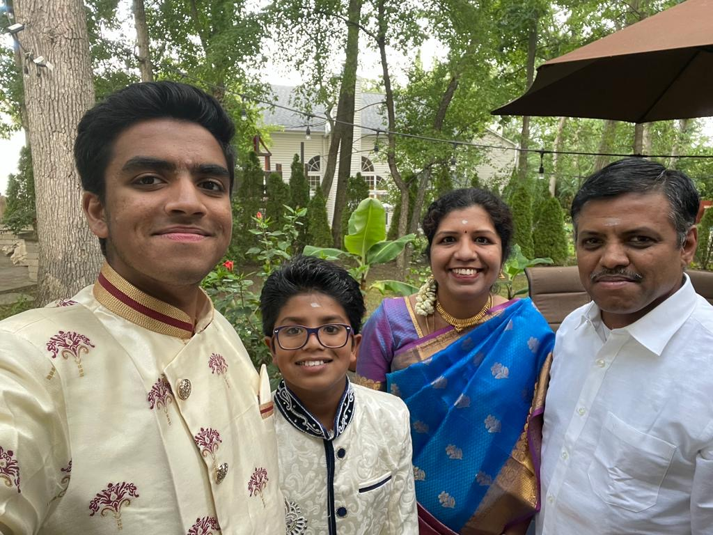
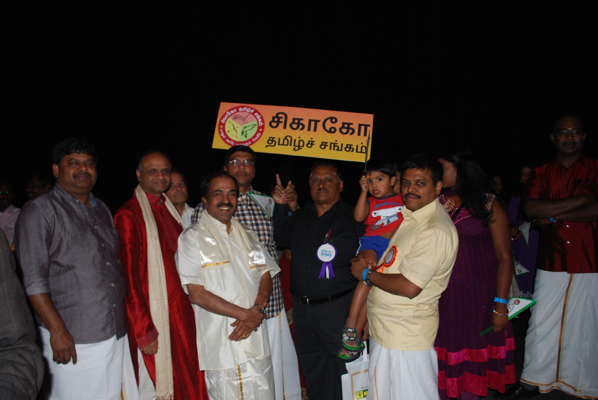
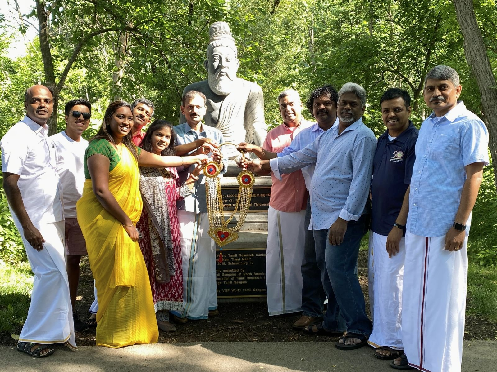
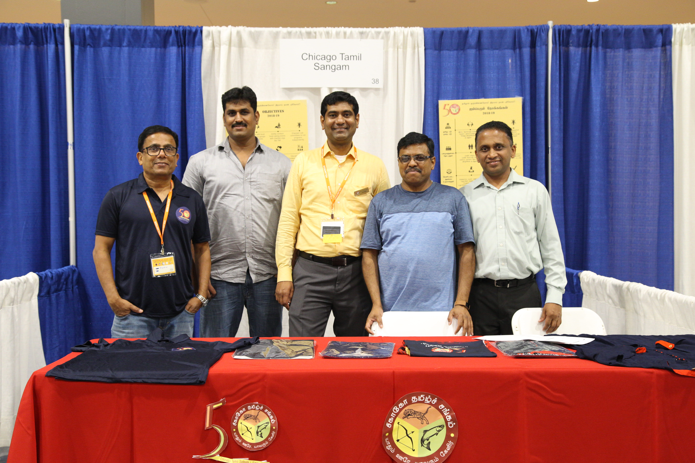

About
Born in Tirunelveli, I moved to Illinois in 2006 and have proudly dedicated the past 20 years to serving our Illinois Tamil community.
Alongside my 25-year career as an IT professional, I have been happily married for 24 years and am the proud father of two boys.
In the Community



Experience
(Central Illinois Tamil Sangam) Board of Director: Organized cultural events and established a chapter of Thamizh Schools USA for the Central Illinois region
(CTS) Volunteer: Began volunteering at CTS events, assisting with photography at the Muththamizh Vizha
(CTS) Event Coordinator: Organized and coordinated marquee community events, including our Parent’s Day and Children’s Day programs
(CTS) Additional Board of Director: Led over 400 volunteers as Volunteer Management Chair for the 2019 FeTNA and World Tamil Conference events
(CTS) Board of Director: Spearheaded the update of the CTS website, overhauling design and navigation to create a more user-friendly experience
(CTS) Treasurer: Managed a budget of over $250,000 as Finance Chair for the 5th International Thirukkural Conference
(CTS) Board of Director: Directed the planning and execution of the Pongal Vizha, kicking off our event calendar for the year